Developmental Biology Center Friday Seminar Series
9 February 2024
matthew michalska-smith
How does the structure of a network relate to the dynamical processes being depicted?
How does the structure of endophytic resource competition relate to the growth and health of host plants?
How does the positioning of parasites within food-webs relate to groupings of species based on interaction similarity?
How does the structure of bipartite ecological interaction networks differ between antagonism and mutualism?
How does the structure of competition networks relate to communities' dynamical stability?
How does the structure of metapopulations of host movement relate to local disease dynamics?
How does the structure of contact networks relate to the spread of disease?
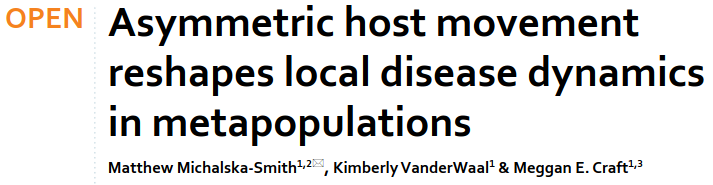
Kimberly VanderWaal

Meggan Craft
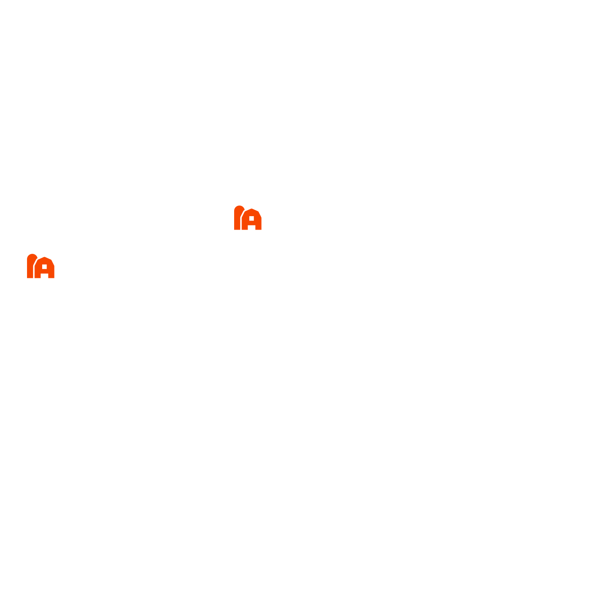
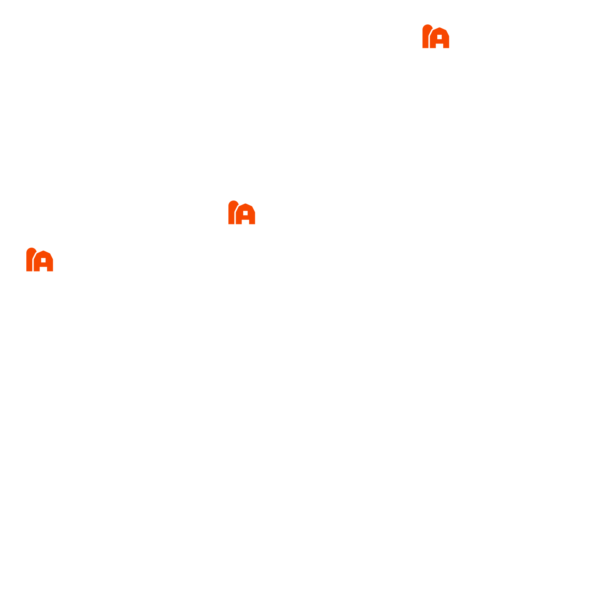
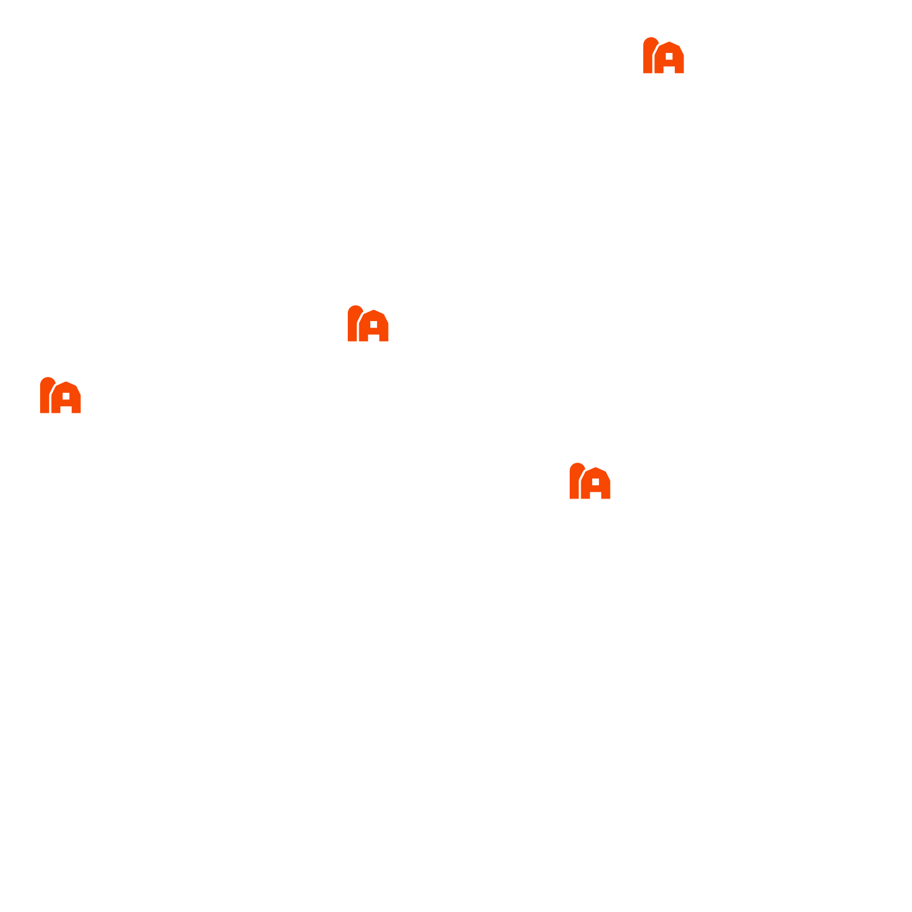
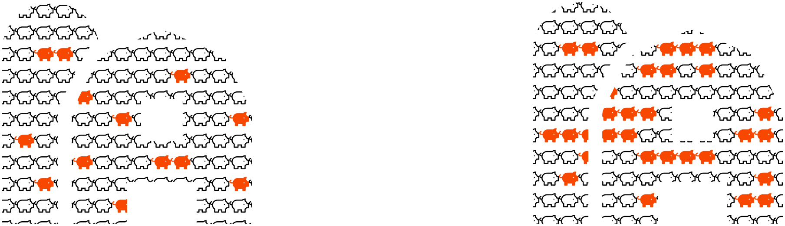
$$
\begin{aligned}
\frac{\textrm{d} S_i}{\textrm{d}t} &= {\color{bc4b51}r S \left(1 - \frac{N}{K}\right)} - {\color{50b99a}\beta S I}\\
\frac{\textrm{d} E_i}{\textrm{d}t} &= {\color{50b99a}\beta S I} - {\color{0b6884}\sigma E} - {\color{bc4b51}r\frac{N}{K} E} - {\color{bc4b51}\mu E}\\
\frac{\textrm{d} I_i}{\textrm{d}t} &= {\color{0b6884}\sigma E} - {\color{ff5e5b}\nu I} - {\color{bc4b51}r\frac{N}{K} I} - {\color{bc4b51}\mu I}
\end{aligned}
$$
- ${\color{bc4b51}r}$: growth (birth - death)
- ${\color{50b99a}\beta}$: infection
- ${\color{0b6884}\sigma}$: recovery
- ${\color{bc4b51}\mu}$: death
- ${\color{ff5e5b}\nu}$: disease-induced mortality
Anderson et al. 1981
$$
\mathbf{\Delta} =
\begin{bmatrix}
-\delta & 0 & 0 & \delta & 0 & 0 & 0\\
0 & -\delta & 0 & 0 & 0 & \delta & 0\\
\delta & 0 & -3 \delta & \delta & \delta & 0 & 0\\
0 & 0 & 0 & 0 & 0 & 0 & 0\\
\delta & \delta & 0 & 0 & -2 \delta & 0 & 0\\
\delta & 0 & \delta & 0 & \delta & -4 \delta & \delta\\
0 & 0 & \delta & \delta & 0 & 0 & -2 \delta
\end{bmatrix}
$$
$$
\begin{aligned}
\frac{\textrm{d} S_i}{\textrm{d}t} &= {\color{bc4b51}r S \left(1 - \frac{N}{K}\right)} - {\color{50b99a}\beta S I} + {\color{7b678e}\sum_j \Delta_{ij} S_j}\\
\frac{\textrm{d} E_i}{\textrm{d}t} &= {\color{50b99a}\beta S I} - {\color{0b6884}\sigma E} - {\color{bc4b51}r\frac{N}{K} E} - {\color{bc4b51}\mu E} + {\color{7b678e}\sum_j \Delta_{ij} E_j}\\
\frac{\textrm{d} I_i}{\textrm{d}t} &= {\color{0b6884}\sigma E} - {\color{ff5e5b}\nu I} - {\color{bc4b51}r\frac{N}{K} I} - {\color{bc4b51}\mu I + {\color{7b678e}\sum_j \Delta_{ij} I_j}}
\end{aligned}
$$
- ${\color{bc4b51}r}$: growth (birth - death)
- ${\color{50b99a}\beta}$: infection
- ${\color{0b6884}\sigma}$: recovery
- ${\color{bc4b51}\mu}$: death
- ${\color{ff5e5b}\nu}$: disease-induced mortality
- ${\color{7b678e}\Delta_{ij}}$: host movement between patches
Anderson et al. 1981
Xiao, Zhou, & Tang 2011
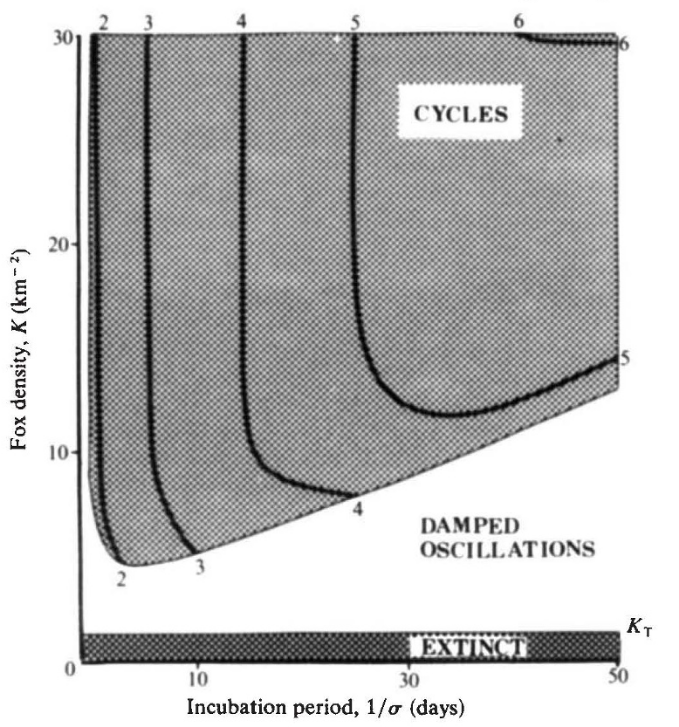
Anderson et al. 1981

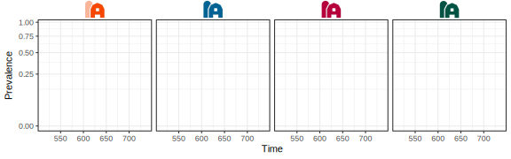
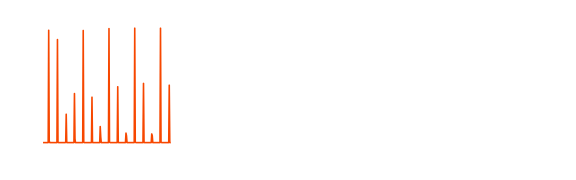
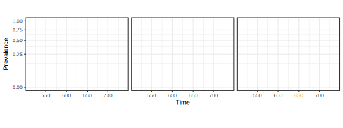
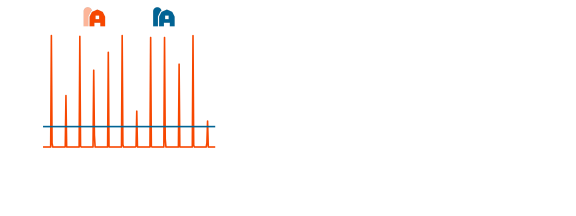
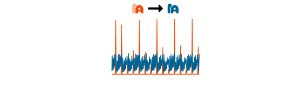
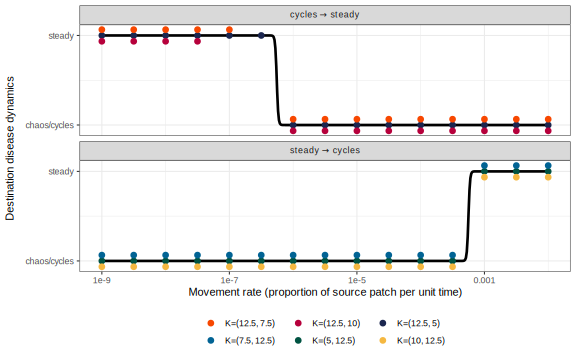
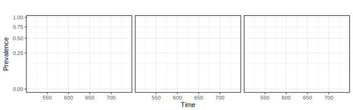
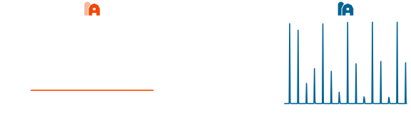
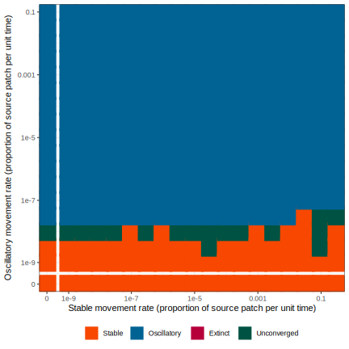
Result (from small networks)
Prediction (in large networks)
Migration dampens cycles:
Reduced cycle amplitude and disease prevalence in networks with longer chains
Destinations inherit dynamics:
Interconnected parts of the network should have similar dynamics
Dynamics inherit asymmetrically:
Preponderance of cyclical and chaotic dynamics
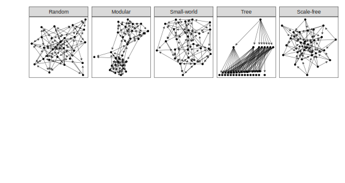
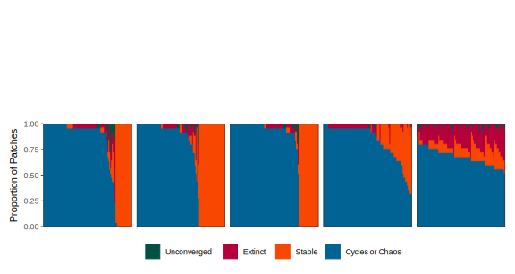
- Simple patterns emerge in small metapopulation networks
- When linked with migration, cyclical dynamics are dampened further down chains
- Migration tends to lead to inheritance of dynamical regimes between populations
- When multiple source populations are considered, more complicated dynamics (cycles and chaos) dominate the inheritance
- While there are patterns in larger networks, they are not simple
- Patches with no immigration tend to have higher pathogen variance than patches that have at least one source of incoming host movement
- Most patches exhibit oscillatory dynamics
- Further research is needed to:
- Identify relationships between more complex network structures and disease dynamics
- Fit to empirical data, including empirical network structures
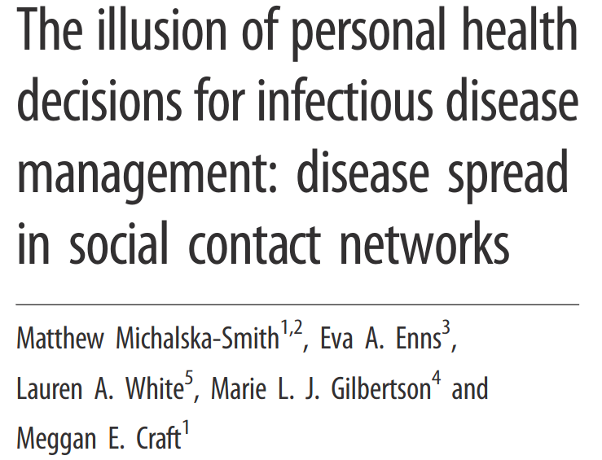
Eva Enns
Lauren White
Marie Gilbertson
Meggan Craft
@City_Janesville on twitter.com
Art by Scusi
What is contact?
What makes a contact network realistic?
- Home/Family
- School
- Work
- Religious institutions
- Hospitals
- Nursing homes
image adapted from Monroe et al. 2021
Interaction properties
Node properties
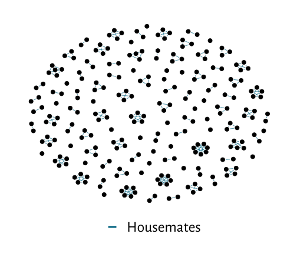
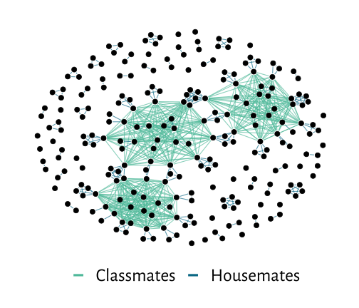


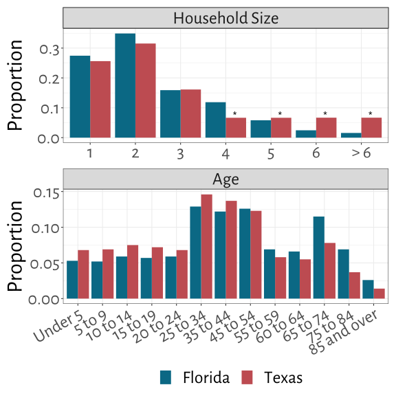

Disease Model
What does this look like in a single simulation?

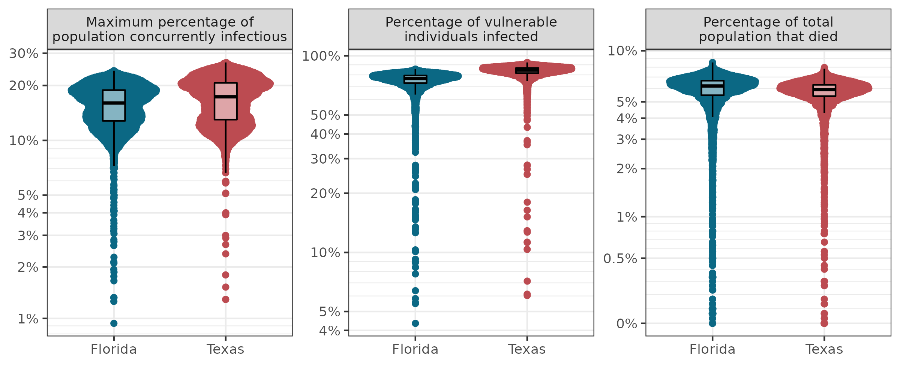
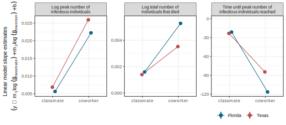
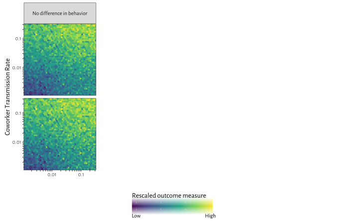
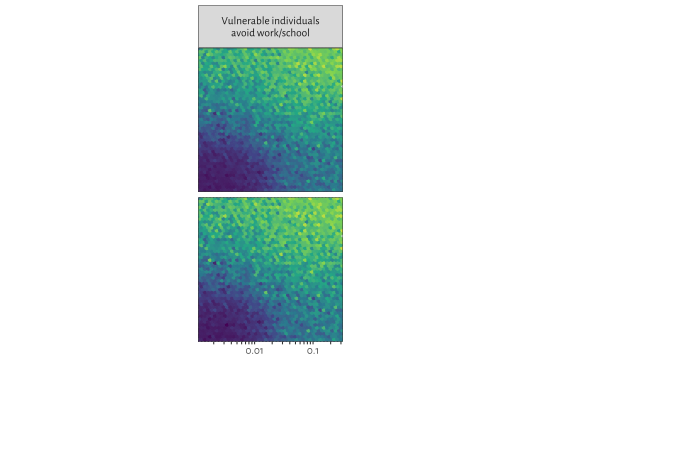
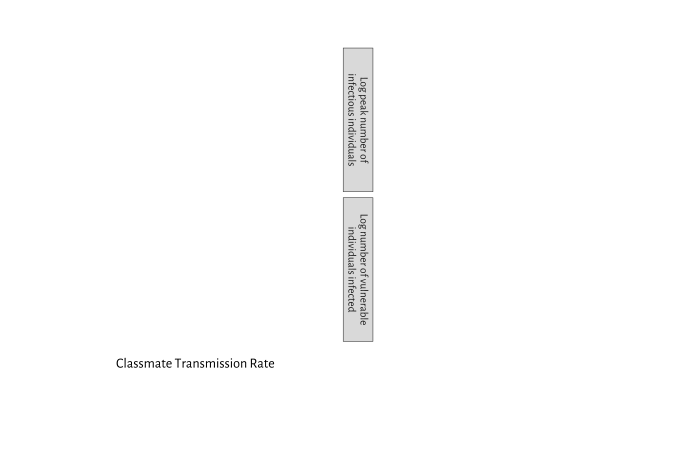
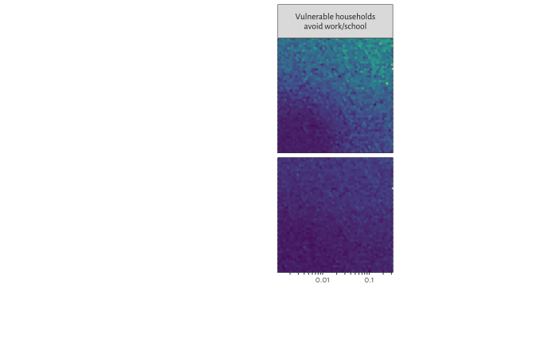
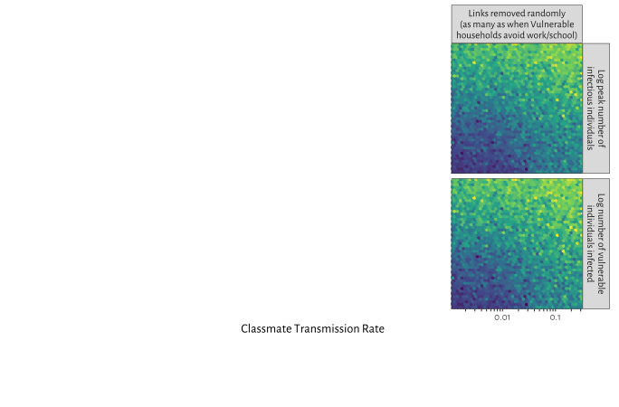
Conclusions
- Populations are highly interconnected, allowing disease to spread even to specific individuals that are taking precautions
- Community action is needed to protect the most vulnerable
- Demographic structure can have nuanced, contradictory effects on disease spread
- Framework as an educational tool